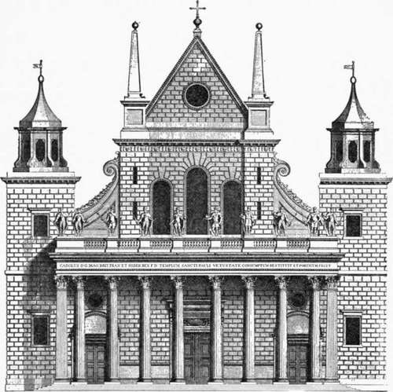
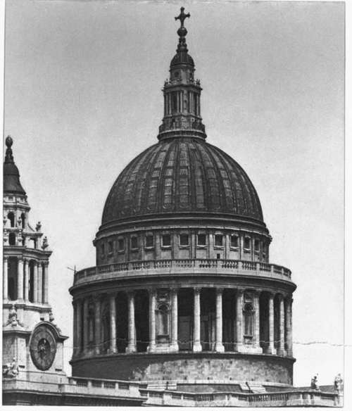
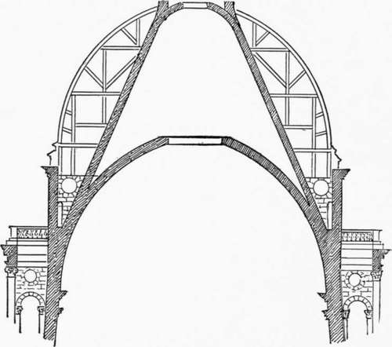

Jones And Wren. Part 5
Description
This section is from the book "Character Of Renaissance Architecture", by Charles Herbert Moore. Also available from Amazon: Character of Renaissance Architecture.
Jones And Wren. Part 5
I think that had the first design been accepted Wren would not have carried it out without material modifications. For he was too good an engineer not to have seen that the form and adjustment of the dome were seriously defective from a structural point of view. However this may be, the dome which he actually built is, as we shall see, fundamentally different in character (though it is not very different in either internal or external shape), and it is different in a way that no outside influences could have compelled.
The most noticeable feature of the second design is that part which rises over the crossing, and consists of a vast frustum of a dome supporting a tall buttressed drum, which in turn is surmounted by a smaller dome of oval outline, from the crown of which rises a telescopic spire of six stages with a strongly marked cornice to each. It was in this design that he is said to have sought to " reconcile the Gothic to a better Manner." What he meant by this I do not know. Wren can hardly have supposed that he was effecting such a reconciliation by this remarkable combination of dome and spire. But in the actual cathedral of St. Paul we shall find some features that may, in part, explain his meaning.
It is noticeable that the west fagade of this design is a close copy, with modifications of proportions and minor details, of the fagade by Inigo Jones (Fig. 134, p. 231), which the fire had weakened or destroyed, and which Wren had much admired. This design was approved, and the king's warrant for its execution was issued May 1st, 1675. But it is said that "the king was pleased to allow him the liberty in the prosecution of his work, to make some variations, rather ornamental than essential, as from time to time he should see proper."1 The actual building shows how largely Wren availed himself of this liberty.
Fig. 134. — Front of old St. Paul's by Inigo Jones.
1 Parentalia, p. 283.
Plate XI
Dome Of St. Paul's London
The cathedral of St. Paul as it now stands was never embodied in any set of drawings. Starting with a few rough sketches the scheme was developed as the work proceeded, the master being always present to direct the work. Wren was at the start what would now be called an amateur, but by degrees he learned his art in the best possible way, not in the office or drawing-room, but on the scaffold in close contact with the works. It was thus that Brunelleschi had worked on the dome of Florence, and Michael Angelo on St. Peter's.
The plan of the existing St. Paul's has no beauty comparable to that of St. Peter's (Fig. 31, p. 67). It has a long nave with a short transept near the middle, a semicircular apse, and two western towers. Both nave and transept have side aisles, and in the angles formed by the towers, which project beyond the aisles in the manner that is common in the mediaeval churches of England, are a consistory court and a morning chapel, while in the angles of the crossing three vestries and a stair-turret are set. Thus the Greek cross plan which Wren appears to have first intended, " a long body with aisles " having been " thought impertinent, our religion not using processions," was widely departed from in conformity with the popular feeling that the first plan " deviated too much from the old Gothick form of Cathedral Churches, which they (the people) had been used to see and admire in this country."
In the elevation a great dome, in outline not very unlike the one first intended, rises over the crossing; the nave and aisles are vaulted with small domes on pendentives of peculiar form, and the piers of the interior are faced with a great Corinthian order of pilasters. That Wren worked with constant reference to St. Peter's as the main source of his inspiration, is clearly enough manifested in the general scheme, though there are many points of difference between the two monuments, apart from the great difference of scale. Other sources of influence are, however, also apparent.
The most interesting feature of St. Paul's cathedral is, of course, the great dome (Plate XI), which is one of the most remarkable of the series of modern domes that began with the dome of Brunelleschi. In general external form it recalls Bramante's diminutive circular temple of San Pietro in Mon-torio, and it is not unlikely that Wren derived the idea from the woodcut of that design in Serlio's book, or in that of Palladio. Wren has, of course, altered and amplified the scheme in adaptation to his vast scale and lofty proportions, but the general composition of the two is substantially the same, though the internal structure is entirely different. The leading features of the exterior, the encircling order crowned with the balustrade, and the dome rising over it surmounted by the lantern, are those of Bramante's design.
Fig. 136. — Section of the dome of St. Paul's.
The structural system of this dome (Fig. 136) is peculiar. From eight piers arches and pendentives are turned, forming the circular bed from which the drum rises to a great height, and from a level far below the top of this drum a dome of masonry, of slightly oval form is sprung. The drum is double, and the inner wall, which carries the dome, inclines inward, as in the rejected design, up to the springing level, and above this it rises vertically against the haunch of the dome. From the haunch a hollow cone of masonry is carried up far above the crown of the dome, where it is cut off and covered with a small segmental dome surmounted by a tall lantern of stone. The system is devised with a view to stability. The cone shape of the inner drum gives it resistance to the dome thrusts, and these thrusts are further fortified by a solid filling of masonry between the smaller cone above and the vault reaching more than halfway from the springing to the crown. The outer drum is a solid wall up to a level but little higher than the apex of the timber roof of the nave, where it forms a stylobate for the encircling Corinthian order. But the two drums are connected by heavy abutments across the interval between them, one behind each column of the encircling order, with a heavier buttress filling every fourth intercolumniation (Plate XI). The inner drum rises in diminished thickness above the entablature of the outer one in the form of an attic with an order of pilasters and square openings between. From this attic rises a false dome of timber, surrounding and concealing the great cone which is the real support of the lantern.
Continue to: